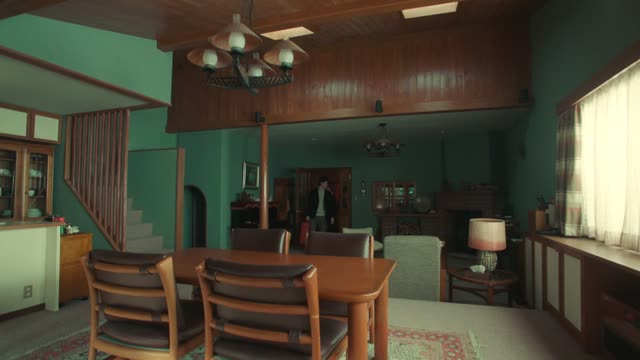
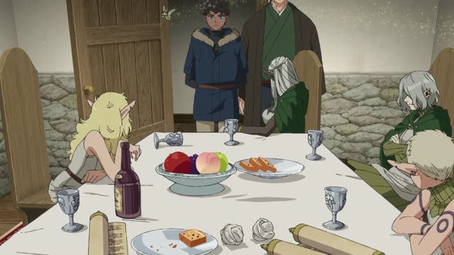
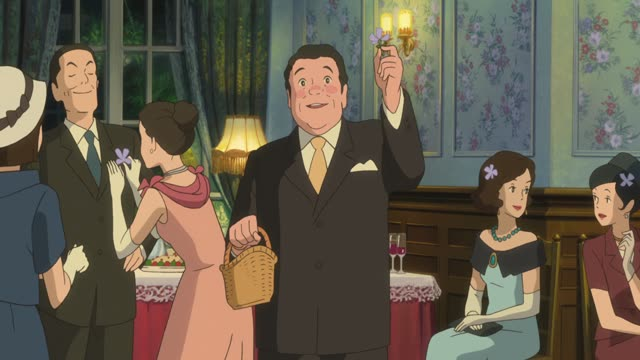
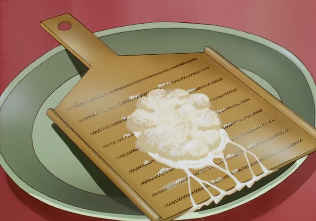
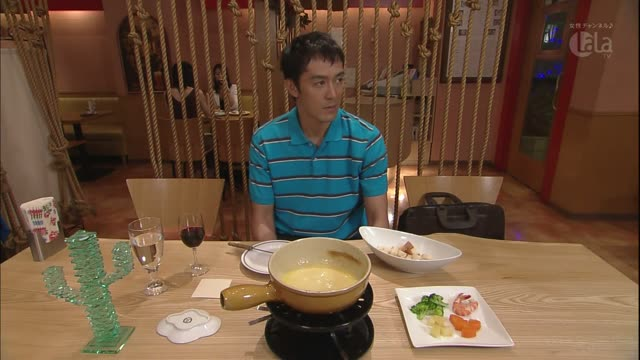
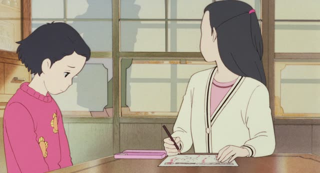
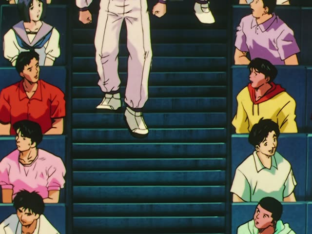

ずつ

Quartet · Episode 1
部屋は２階に一人ずつ個室があります。
"Upstairs there's a private room for each person."
ずつ goes right after an amount (number + counter, or 少し) and means "each" or "at a time": the same amount goes to everyone, or comes again and again.
ずつ itself never changes: politeness comes from the end of the sentence.
On this card, he's showing the others the house: one room per person, not one room to share.
Shirokuma Cafe · Episode 17
みんな、１本ずつ引いてくれ。
"Everyone, draw one each."
On this card, they draw straws to pick tents, and each of them takes exactly one.
Quick Examples
A friend asks how you study kanji.
毎日、漢字を５つずつ覚えています。
"I learn five kanji a day."
"At a time": five today, five tomorrow, and so on.
PoliteYou hand out snacks to the kids.
お菓子は一人２つずつだよ。
"Two snacks each!"
CasualYou're learning something hard.
少しずつ分かってきた。
"I'm starting to get it, little by little."
少しずつ = "a little at a time", very common.
CasualWith and without
りんごを２つあげる。
"I'll give you two apples." Two in total.
りんごを２つずつあげる。
"I'll give you two apples each." Two for every person.
Examples from Media
Death Note · Episode 6
一人ずつお話をさせていただきたいんですが。
"I'd like to speak with you one at a time."

Dungeon Meshi · Episode 21
少しずつ退避させましょう。
"Let's get them out little by little."

When Marnie Was There
幸運のために１つずつどうぞ！
"For good luck, one each!"

Oishinbo · Episode 37
パンに一口ずつのせて食べる、というやり方です。
"You put it on the bread one bite at a time and eat it."

Kekkon Dekinai Otoko · Episode 11
じゃあさ、１個ずつ取って。
"Okay, so let's each order one [and share]."
Kotaro Lives Alone · Episode 2
お主たちに10円ずつ頂いておこう。
"I shall take ten yen from each of you."

Only Yesterday
ヤエちゃん、一つずつ教えてやって。
"Yae, teach her one step at a time."

Slam Dunk · Episode 50
階段を２段ずつ下りてんぜ。
"He's going down the stairs two at a time."